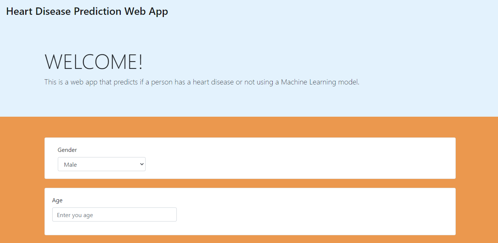
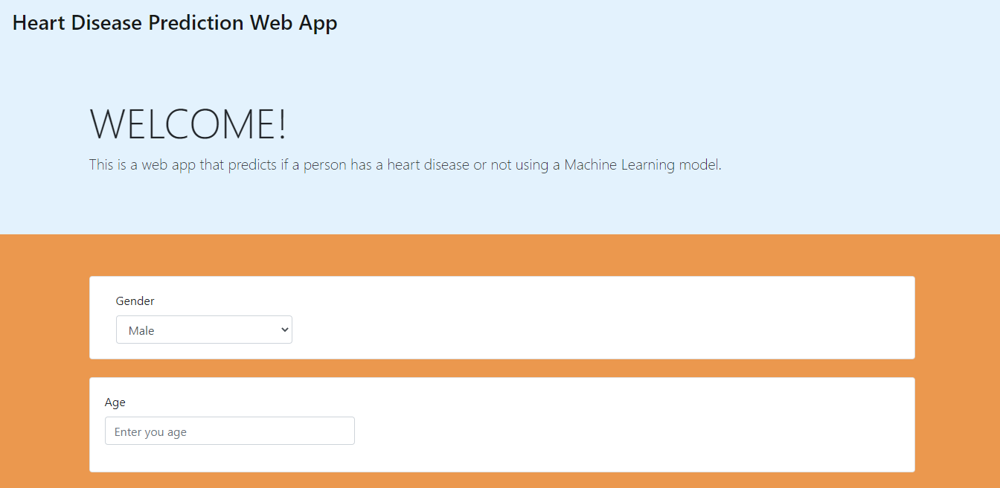
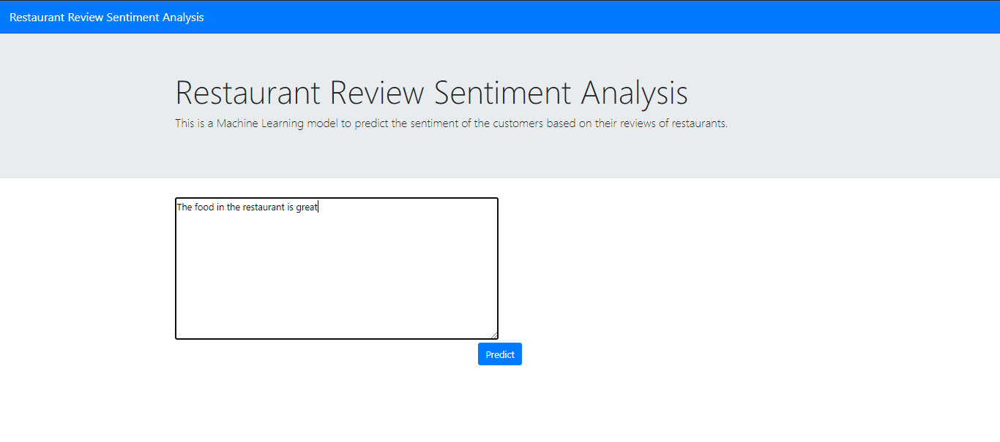
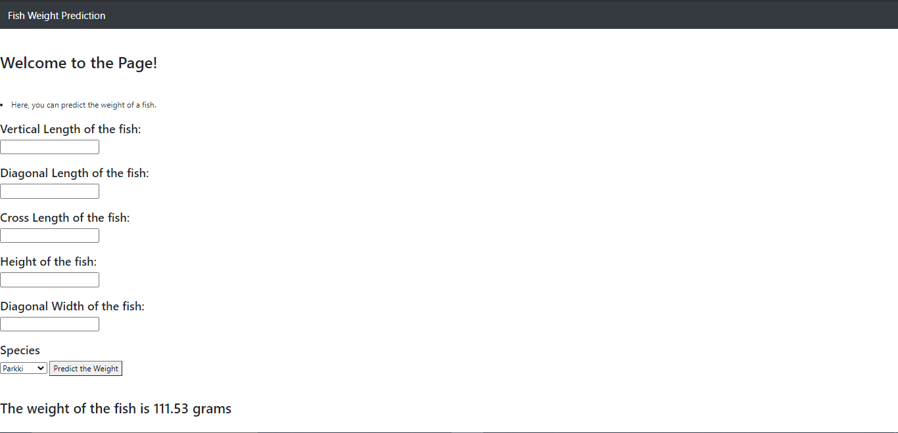
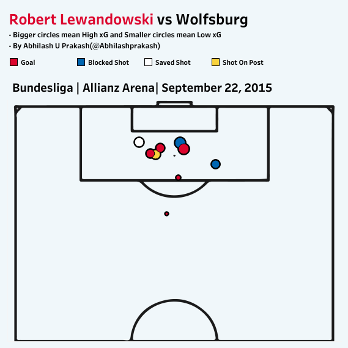
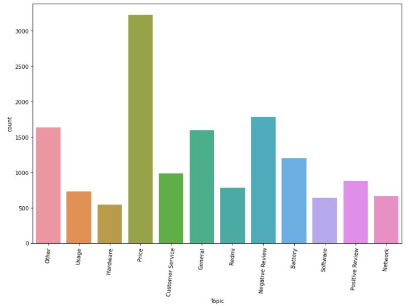

Hello, I'm Abhilash and this is my website which contains some of the projects that I have done as part of my learning in Data Science. I also previously have experience working as a Media Analyst and currently looking for opportunities to work in the field of Data Science. I also make visualizations related to football and write threads on Twitter related to it. Below are some of the projects I have done. I will keep adding as I do more.
, 

This is a Machine Learning Project that tries to predict if a person has a heart disease or not. Click on Full Story to see how the project was done.

An NLP model that tries to predict the sentiment of a user based on their review of a restaurant. Click on Full Story to see how the project was done.

A Machine Learning Project that tries to predict the weight of a fish by using the various measurements. Click on Full Story to know how the project was done.

Here you can check out all the visulizations I have made with respect to football and contains viaualizations made with both Python and Tableau. Click on Full Story to know more and the title to check out my Tableau Public profile where I have published some of my work.
Here, I have fine-tuned a pre-trained BERT Model by using a Movie review dataset from Kaggle. Click on Full Story to know more about BERT and how the project was done.

Here, I have tried to differentiate reviews from Amazon on a particular mobile phone into different topics. Click on Full Story to know more.